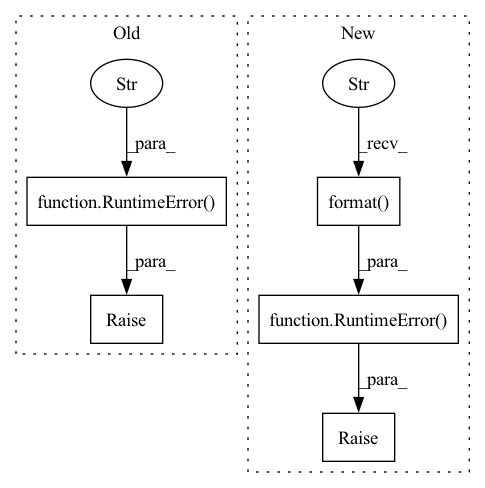

Pattern ID :38394
Before Change
self._grad_norm_buf[self.data_parallel_rank] = grad_norm
distributed_utils.all_reduce(self._grad_norm_buf, group=self.data_parallel_process_group)
if not (self._grad_norm_buf == self._grad_norm_buf[0]).all():
raise RuntimeError(
"Fatal error: gradients are inconsistent between workers. "
"Try --ddp-backend=no_c10d."
)
def _reduce_and_log_stats(self, logging_outputs, sample_size, grad_norm=None):
if grad_norm is not None:
metrics.log_speed("ups", 1., priority=100, round=2)After Change
for r, n in enumerate(self._grad_norm_buf.tolist())
)
error_detail = "grad_norm across the workers:\n{}\n".format(pretty_detail)
raise RuntimeError(
"Fatal error: gradients are inconsistent between workers. "
"Try --ddp-backend=no_c10d. "
"Or are you mixing up different generation of GPUs in training?"
+ "\n"
+ "-" * 80
+ "\n{}\n".format( error_detail)
+ "-" * 80
)
def _reduce_and_log_stats(self, logging_outputs, sample_size, grad_norm=None):
if grad_norm is not None:
metrics.log_speed("ups", 1., priority=100, round=2)In pattern: SUPERPATTERN
Frequency: 3
Non-data size: 5
Instances Fragment ID: 109703471
Project Name: kssteven418/i-bert
Commit Name: 29b8a4deb58ca9798b61690a31de1ea57de92122
Time: 2020-05-29
Author: yqw@fb.com
File Name: fairseq/trainer.py
M Class Name: Trainer
N Class Name: Trainer
M Method Name: _check_grad_norms(2)
N Method Name: _check_grad_norms(2)
M Parent Class: object
N Parent Class: object
M File Name: fairseq/trainer.py
N File Name: fairseq/trainer.py
M Start Line: 844
M End Line: 852
N Start Line: 853
N End Line: 875
Before Change
if (not hasattr(model, "input_device") or
not hasattr(model, "output_device")):
raise RuntimeError("Wrap your model of type nn.Module with one of: \n"
"1. static_module_wrapper "
"from machin.model.nets.base \n"
"1. dynamic_module_wrapper "
"from machin.model.nets.base \n"
"Or construct your own module & model with: \n"
"NeuralNetworkModule from machin.model.nets.base" )
input_device = model.input_device
args = inspect.getfullargspec(model.forward).args
args_dict = {}
if any(arg not in args for arg in required_argument):After Change
model_type = type(model)
device = determine_device(model)
if len(device) > 1:
raise RuntimeError( "Failed to automatically determine i/o device "
"of your model: {}\n"
"Detected multiple devices: {}\n"
"You need to manually specify i/o device of "
"your model.\n"
"Wrap your model of type nn.Module with one "
"of: \n"
"1. static_module_wrapper "
"from machin.model.nets.base \n"
"1. dynamic_module_wrapper "
"from machin.model.nets.base \n"
"Or construct your own module & model with: \n"
"NeuralNetworkModule from machin.model.nets.base"
.format( model_type, device))
else:
// assume that i/o devices are the same as parameter device
// print a warning
default_logger.warning("You have not specified the i/o device of " Fragment ID: 109703472
Project Name: iffix/machin
Commit Name: dcc12704d8aeef05eaa2a08d7ecb62ca19bf3128
Time: 2020-07-26
Author: hanhanmumuqq@163.com
File Name: machin/frame/algorithms/utils.py
M Class Name: AnonimousClass
N Class Name: AnonimousClass
M Method Name: safe_call(1)
N Method Name: safe_call(1)
M Parent Class:
N Parent Class:
M File Name: machin/frame/algorithms/utils.py
N File Name: machin/frame/algorithms/utils.py
M Start Line: 68
M End Line: 74
N Start Line: 78
N End Line: 106
Before Change
vpc_client = vpc_client or make_vpc_client(config)
vpc = vpc_client.show_vpc(ShowVpcRequest(vpc_id=vpc_id)).vpc
else:
raise RuntimeError("Failed to get the VPC for the current machine. "
"Please make sure your current machine is"
"a HUAWEICLOUD virtual machine." )
return vpc
def delete_huaweicloud_workspace(config, delete_managed_storage):After Change
vpc = vpc_client.show_vpc(ShowVpcRequest(vpc_id=vpc_id)).vpc
return vpc
except Exception as e:
raise RuntimeError( "Failed to get the VPC for the current machine. "
"Please make sure your current machine is"
"a HUAWEICLOUD virtual machine. {}".format( e))
def delete_huaweicloud_workspace(config, delete_managed_storage):
workspace_name = config["workspace_name"] Fragment ID: 109703474
Project Name: oap-project/cloudtik
Commit Name: 73bd61b01b75c16f764f8393c7ba60bf25d6dcd3
Time: 2023-02-28
Author: chenrui.momo@gmail.com
File Name: python/cloudtik/providers/_private/huaweicloud/config.py
M Class Name: AnonimousClass
N Class Name: AnonimousClass
M Method Name: _get_current_vpc(1)
N Method Name: _get_current_vpc(2)
M Parent Class:
N Parent Class:
M File Name: python/cloudtik/providers/_private/huaweicloud/config.py
N File Name: python/cloudtik/providers/_private/huaweicloud/config.py
M Start Line: 588
M End Line: 603
N Start Line: 608
N End Line: 623